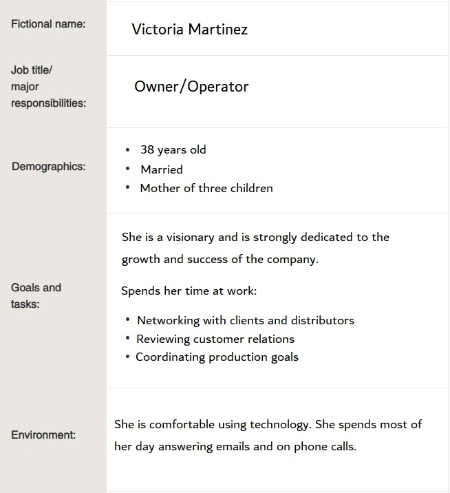

Target Audience
The site is intended to target local business owners and provide resources to the local community to start and grow cooperation and economic growth for all chamber memebers.
Personas

Sceneios
- What events are happening in my community?
- What local businesses could we team up with?
- What kinds of marketing works in my area?
- What resources are available to grow my business?
- Who do I contact for community guidlines?
Photo credits:
Businessman Photo by Andrea Piacquadio from Pexels
Businesswoman Photo by Tim Douglas from Pexels